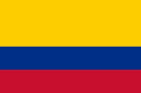

About me

My name is Mauricio Arismendi Avila, I am 28 years old (Yep, I'm very old) and I work as a call center agent. My dream is to learn how to code so I can get a better job and make my parents proud. I also wish to learn mandarin so I can travel and stay in China.
Colombia
Colombia, located in the northwest corner of South America, is a vibrant country known for its rich cultural heritage and diverse landscapes. It boasts stunning beaches along the Caribbean and Pacific coasts, the lush Amazon rainforest, and the towering Andes mountains. Colombia is the world’s leading producer of emeralds and renowned for its high-quality coffee. The country has a dynamic cultural scene, blending indigenous, African, and European influences, seen in its music, dance, and festivals like the Barranquilla Carnival. Despite past challenges with political conflict, Colombia has emerged as a popular tourist destination, celebrated for its warmth, biodiversity
Web Dev Resources
- Web Dev
- resources
- Youtube
- ChatGPT
- My roomate is a CS graduate